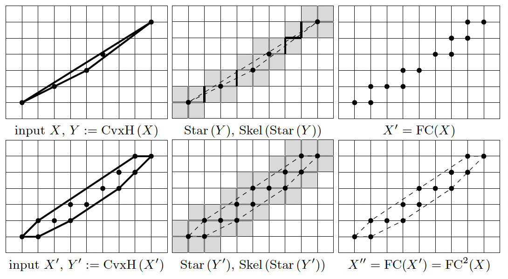
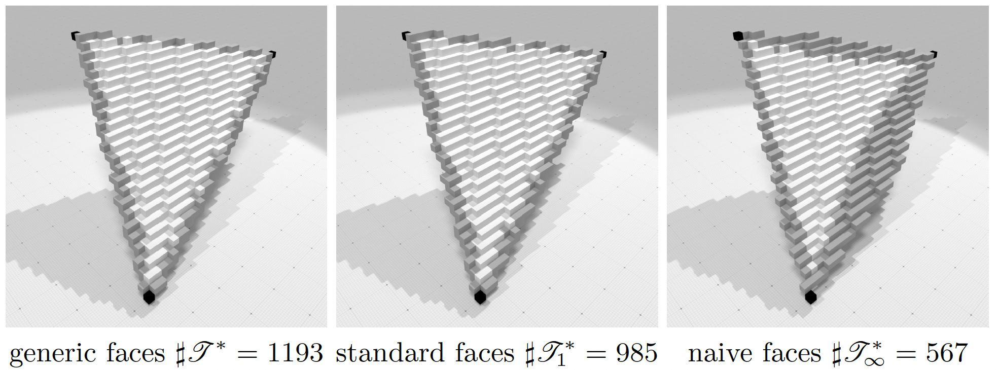
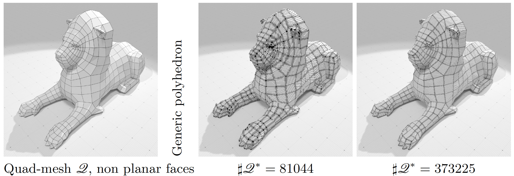
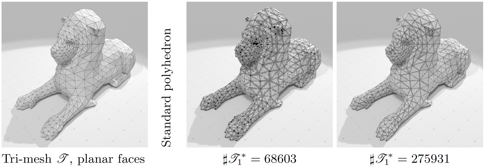
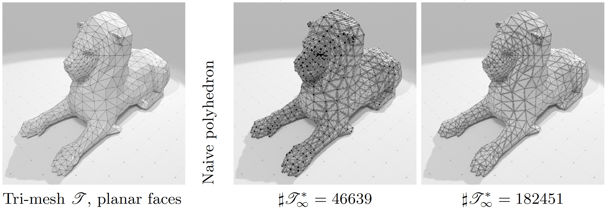

- Author(s) of this documentation:
- Jacques-Olivier Lachaud
- Since
- 1.3
Part of the Geometry package.
This part of the manual describes convex hull tools associated to a new definition of digital convexity, called the full convexity [79] [80] . Most of the work presented here is related to [53] . We talk about convex envelopes instead of convex hulls, since the presented operations do not satisfy all the usual hull operations. This is detailed below. Last, this module shows how the envelope operation is useful to build digital polyhedra.
The following programs are related to this documentation: testDigitalConvexity.cpp, geometry/volumes/digitalPolyhedronBuilder3D.cpp, geometry/volumes/standardDigitalPolyhedronBuilder3D.cpp .
This module relies on module QuickHull algorithm in arbitrary dimension for convex hull and Delaunay cell complex computation for convex hull computations in arbitrary dimensions. You may also look at Digital convexity, full convexity and P-convexity to see the theory of full convexity.
Fully convex envelopes
Envelope of a digital set
We build an envelope operator \( \mathrm{FC}^* \) for a digital set \( Z \subset \mathbb{Z}^d \) with the following properties:
- \( Z \subset \mathrm{FC}^*(Z) \) (inclusion)
- \( \mathrm{FC}^*(Z) \) is always fully convex (full convexity)
- \( \mathrm{FC}^*(Z)=Z \) if and only if \( Z \) is fully convex (characterization and idempotence)
- \( \mathrm{FC}^*(Z) \) is included in the bounded box of \( Z \) (geometric consistency)
However the following property is not true in general:
- \( Z_1 \subset Z_2 \) implies \( \mathrm{FC}^*(Z_1) \subset \mathrm{FC}^*(Z_2) \) (increasing)
The envelope operator is itself built upon the \( \mathrm{FC} \) operator defined as:
\(\mathrm{FC}(Z):=\mathrm{Extr}(\mathrm{Skel}(\mathrm{Star}(\mathrm{CvxH}(Z))))
\)
where:
- \( \mathrm{CvxH} \) denotes the standard convex hull in Euclidean space,
- \( \mathrm{Star} \) denotes the set of cells of the cubical grid complex induced by lattice points, whose closure intersects the given set,
- \( \mathrm{Skel} \) denotes the skeleton of a cell complex, i.e. the smallest cell complex whose star is equal to the input cell complex,
- \( \mathrm{Extr} \) returns the set of lattice points that are vertices of cells of the given cell complex.
The envelope operator is the limit of the iterated repetition of operator \( \mathrm{FC} \). It is proven that this sequence achieves a fixed point in a bounded number of iterations. The figure below illustrates this operator in 2D.

Illustration of operator FC and its successive application, until idempotence. The result is a fully convex set.
Envelope of a digital set relative to another fully convex set
Given a fully convex set \( Y \subset \mathbb{Z}^d \) and a digital set \( X \subset Y \), we can define the envelope of \( X \) relative to \( Y \) as
\( \mathrm{FC}^*_{\mid Y}( X ) := \lim_{n \rightarrow +\infty}
\mathrm{FC}^n_{\mid Y}( X ) \) with \( \mathrm{FC}_{\mid Y}( X ) :=
\mathrm{FC}(X) \cap Y \).
It satisfies the following properties:
- \( X \subset \mathrm{FC}^*_{\mid Y}( X ) \subset Y \) (inclusion)
- \( \mathrm{FC}^*_{\mid Y}( X ) \) is fully convex (full convexity)
- \( \mathrm{FC}^*_{\mid Y}( X ) = X \) if and only if \( X \) is fully convex (characterization and idempotence)
- \( \mathrm{FC}^*_{\mid Y}( X ) \) is included in the bounding box of \( X \) (geometric consistency)
Again it may not be an increasing operator. The interest of relative envelopes will appear clearly in section Digital polyhedra .
Computing fully convex envelopes
Most operations are defined in class DigitalConvexity. They allow to build the (relative or not) envelope, but also to compute intermediate steps, which can be useful in some contexts.
Envelope operations
- DigitalConvexity::envelope builds the fully convex envelope of any digital set.
- DigitalConvexity::relativeEnvelope builds the relative fully convex envelope of any digital set relative to another fully convex set \( Y \). One variant takes as input for \( Y \) a set of lattice points; another variant takes a predicate for defining \( Y \). The second variant is useful when \( Y \) is infinite or can be quickly defined with a function, like arithmetic planes.
- DigitalConvexity::depthLastEnvelope gives the number of \( \mathrm{FC} \) iterations in the last call to an envelope operation.
Intermediate computations
- DigitalConvexity::FC computes the operation \( \mathrm{FC}(Z):=\mathrm{Extr}(\mathrm{Skel}(\mathrm{Star}(\mathrm{CvxH}(Z)))) \), for \( Z \) a digital set.
- DigitalConvexity::CvxH computes the lattice polytope that is the convex hull of the given digital set.
- DigitalConvexity::StarCvxH computes the set of lattice cells \( \mathrm{Star}(\mathrm{CvxH}(Z)) \), i.e. the cells that touch the convex hull of the given digital set.
- DigitalConvexity::Star computes the set of lattice cells \( \mathrm{Star}(Z) \), i.e. the cells that touch some point of the given digital set.
- DigitalConvexity::StarCells computes the set of lattice cells \( \mathrm{Star}(C) \), i.e. the cells that touch some cell of the given set of cells, represented with lattice point and Khalimsky coordinates.
- DigitalConvexity::sizeStarCvxH computes the cardinal of the set of lattice cells \( \mathrm{Star}(\mathrm{CvxH}(Z)) \), i.e. the number of cells that touch the convex hull of the given digital set. Slightly faster than the previous one.
- DigitalConvexity::Extr computes the extremal vertices of a range of cells.
- DigitalConvexity::ExtrCvxH computes the extremal vertices of the convex hull of a range of lattice points.
- DigitalConvexity::ExtrSkel computes the extremal vertices of the skeleton of a range of cells.
Representations and conversions
The previous static methods use two representations for lattice points and cells:
- DigitalConvexity::PointRange : a range of lattice points is represented by a sorted standard vector of points.
- DigitalConvexity::LatticeSet : ranges and sets of cells are represented with a stacked row representation called lattice set (class LatticeSetByIntervals): each cell is represented by a lattice point (its Khalimsky coordinates), cells of the same row are stacked as sorted intervals. This saves memory and speeds up a lot of procedures.
You may switch from one representation to the other as follows:
Digital polyhedra
Envelopes and relatives provide a very neat and unambiguous way to create a set of voxels associated to a given polyhedron.
Indeed for any convex facet \( \sigma \) of a polyhedron with vertices \( V(\sigma) \), it suffices to define the generic digital facet \( \sigma^* \) as \( \mathrm{FC}^*( V(\sigma) )
\). Moreover, if the vertices \( V(\sigma) \) are coplanar (this is always the case for a simplex), we can define the standard digital facet \( \sigma^*_1 \) as the envelope of \( V(\sigma)
\) relative to the standard median digital plane containing the vertices. An even thinner facet is achievable: the naive digital facet \( \sigma^*_\infty \) is the envelope of \( V(\sigma) \) relative to the naive median digital plane containing the vertices. This is illustrated below for a triangle defined by three vertices.

Illustration of generic, standard and naive digital facet with 3 vertices. Vertices are in black, edges are in black and grey, triangle is black, grey and white.
From any polydron defined by its vertices and the combinatorics of its facets, we can thus build several well-defined digital polyhedra, that are valid for any digitization step h and any dimension:
- First digitize the vertices of the polyhedron at the desired resolution, i.e. if the vertex has real position \( x \), then its digital position is \( x^* := \mathrm{round}(x/h) \).
- Choose if you wish to build a generic, standard or naive polyhedron, then digitize each facet (or edges) as the (relative or not) fully convex envelope of its digitized vertices.
This is illustrated below in 3D at two different resolutions.

Illustration of generic digital polyhedron of lion.obj polyhedron at two different resolutions. Facets may not be planar.

Illustration of standard digital polyhedron of lion-tri.obj polyhedron at two different resolutions. Each facet is planar.

Illustration of naive digital polyhedron of lion-tri.obj polyhedron at two different resolutions. Each facet is planar.
The digital polyhedron is guaranteed to cover all the faces and presents inclusions relations between facets and incident cells. The whole code for building digital polyhedra is given in examples geometry/volumes/digitalPolyhedronBuilder3D.cpp and geometry/volumes/standardDigitalPolyhedronBuilder3D.cpp .
 1.14.0
1.14.0